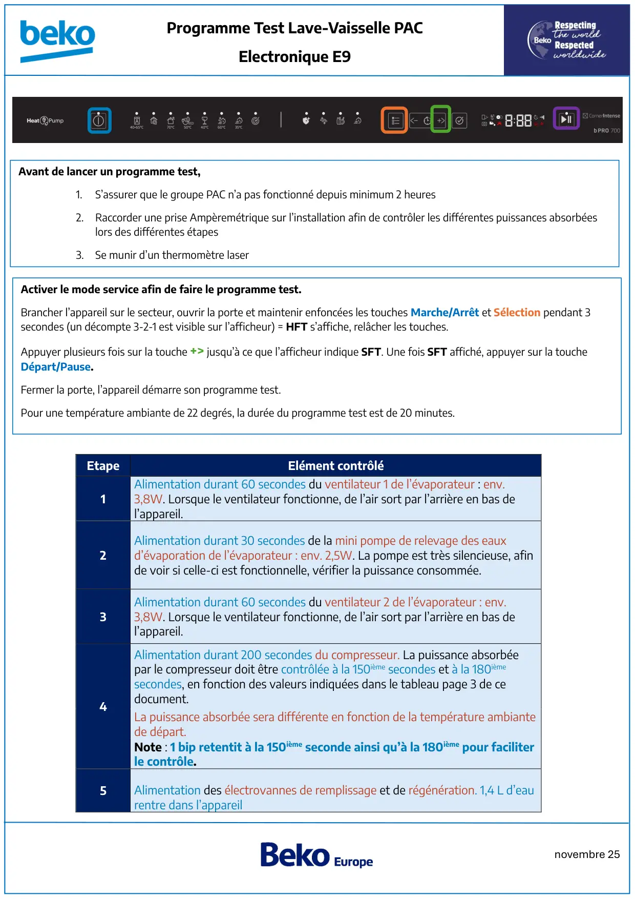
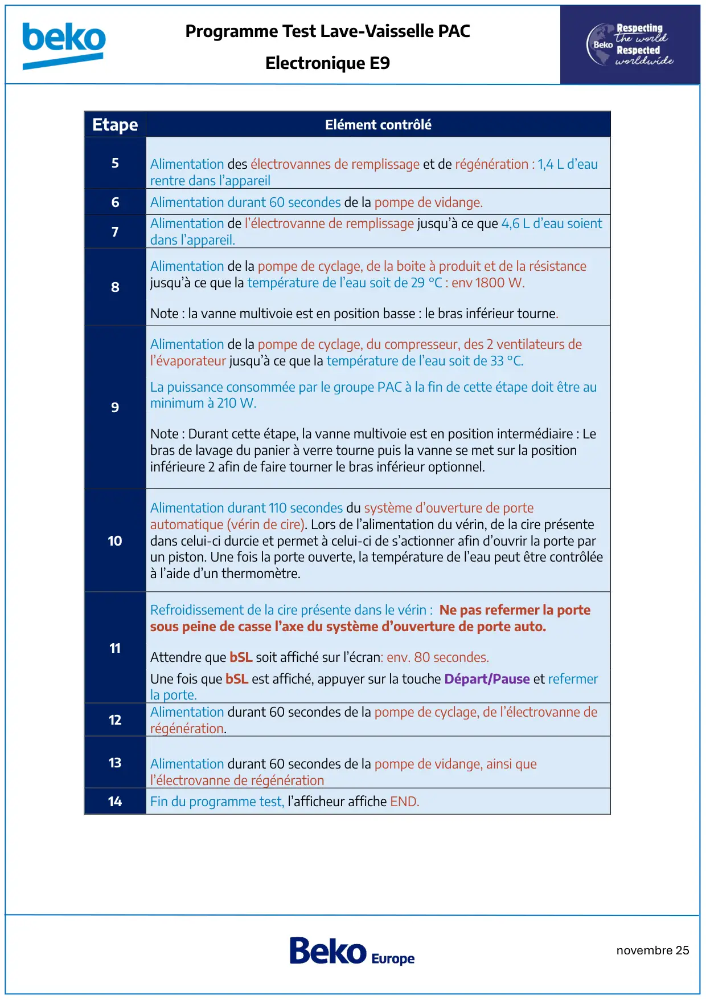
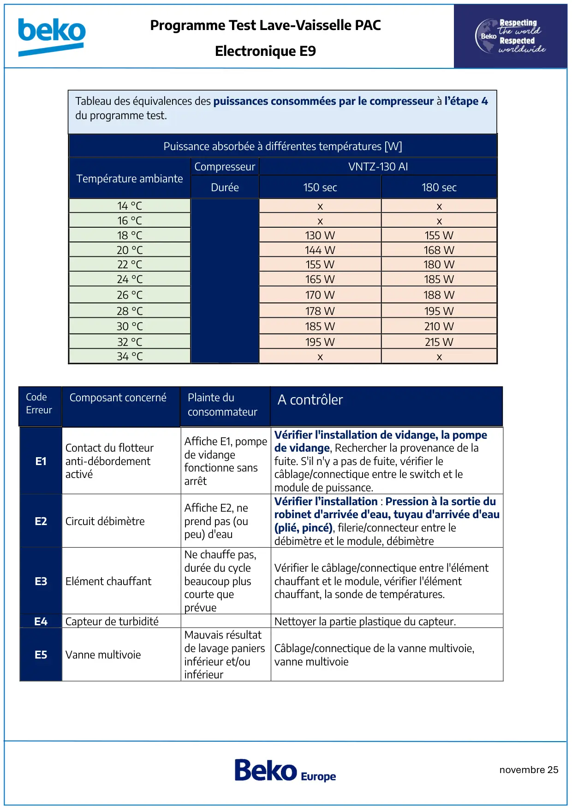
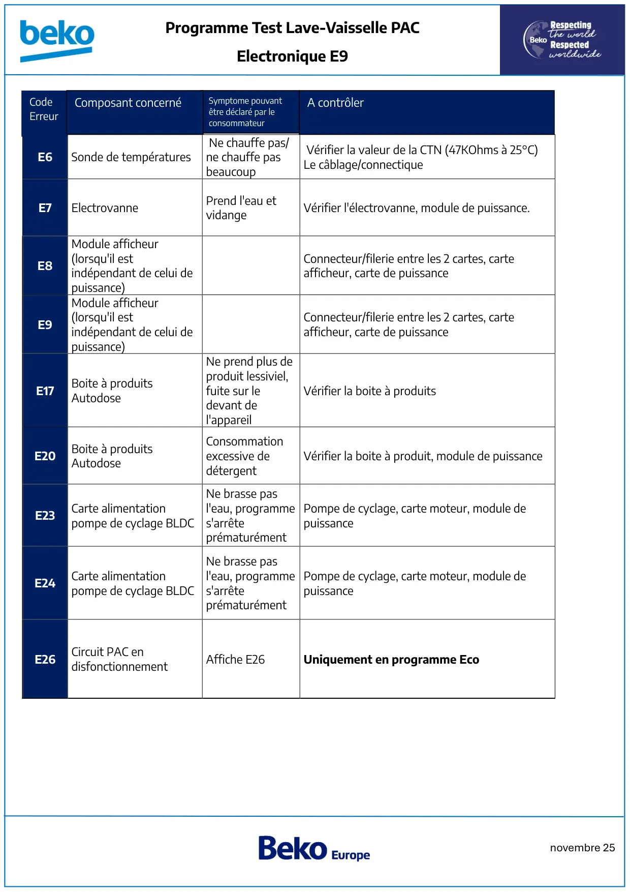
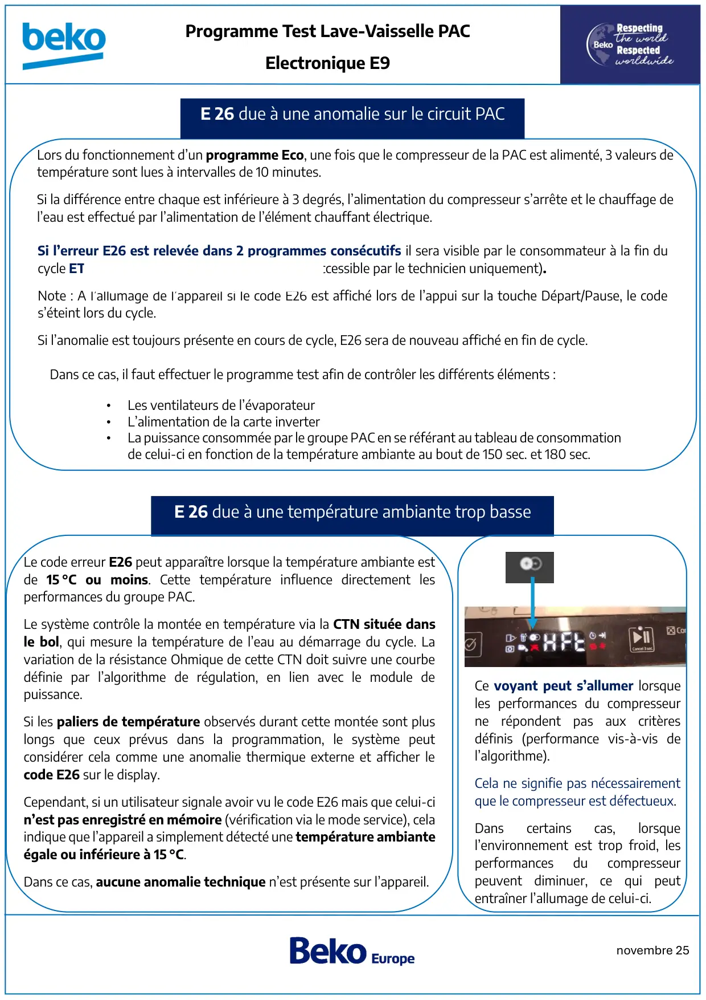

Prog Test lave vaisselle PAC ElectroniqueE9

novembre 25Programme Test Lave-Vaisselle PACElectronique E9EtapeElément contrôlé1Alimentation durant 60 secondes du ventilateur 1 de l’évaporateur : env.3,8W. Lorsque le ventilateur fonctionne, de l’air sort par l’arrière en bas del’appareil.2Alimentation durant 30 secondes de la mini pompe de relevage des eauxd’évaporation de l’évaporateur : env. 2,5W. La pompe est très silencieuse, afinde voir si celle-ci est fonctionnelle, vérifier la puissance consommée.3Alimentation durant 60 secondes du ventilateur 2 de l’évaporateur : env.3,8W. Lorsque le ventilateur fonctionne, de l’air sort par l’arrière en bas del’appareil.4Alimentation durant 200 secondes du compresseur. La puissance absorbéepar le compresseur doit être contrôlée à la 150ième secondes et à la 180ièmesecondes, en fonction des valeurs indiquées dans le tableau page 3 de cedocument.La puissance absorbée sera différente en fonction de la température ambiantede départ.Note : 1 bip retentit à la 150ième seconde ainsi qu’à la 180ième pour faciliterle contrôle.5Alimentation des électrovannes de remplissage et de régénération. 1,4 L d’eaurentre dans l’appareilAvant de lancer un programme test,1.S’assurer que le groupe PAC n’a pas fonctionné depuis minimum 2 heures2.Raccorder une prise Ampèremétrique sur l’installation afin de contrôler les différentes puissances absorbéeslors des différentes étapes3. Se munir d’un thermomètre laserActiver le mode service afin de faire le programme test.Brancher l’appareil sur le secteur, ouvrir la porte et maintenir enfoncées les touches Marche/Arrêt et Sélection pendant 3secondes (un décompte 3-2-1 est visible sur l’afficheur) = HFT s’affiche, relâcher les touches.Appuyer plusieurs fois sur la touche +> jusqu’à ce que l’afficheur indique SFT. Une fois SFT affiché, appuyer sur la toucheDépart/Pause.Fermer la porte, l’appareil démarre son programme test.Pour une température ambiante de 22 degrés, la durée du programme test est de 20 minutes.
1 / 5
novembre 25Programme Test Lave-Vaisselle PACElectronique E9EtapeElément contrôlé5Alimentation des électrovannes de remplissage et de régénération : 1,4 L d’eaurentre dans l’appareil6Alimentation durant 60 secondes de la pompe de vidange.7Alimentation de l’électrovanne de remplissage jusqu’à ce que 4,6 L d’eau soientdans l’appareil.8Alimentation de la pompe de cyclage, de la boite à produit et de la résistancejusqu’à ce que la température de l’eau soit de 29 °C : env 1800 W.Note : la vanne multivoie est en position basse : le bras inférieur tourne.9Alimentation de la pompe de cyclage, du compresseur, des 2 ventilateurs del’évaporateur jusqu’à ce que la température de l’eau soit de 33 °C.La puissance consommée par le groupe PAC à la fin de cette étape doit être auminimum à 210 W.Note : Durant cette étape, la vanne multivoie est en position intermédiaire : Lebras de lavage du panier à verre tourne puis la vanne se met sur la positioninférieure 2 afin de faire tourner le bras inférieur optionnel.10Alimentation durant 110 secondes du système d’ouverture de porteautomatique (vérin de cire). Lors de l’alimentation du vérin, de la cire présentedans celui-ci durcie et permet à celui-ci de s’actionner afin d’ouvrir la porte parun piston. Une fois la porte ouverte, la température de l’eau peut être contrôléeà l’aide d’un thermomètre.11Refroidissement de la cire présente dans le vérin : Ne pas refermer la portesous peine de casse l’axe du système d’ouverture de porte auto.Attendre que bSL soit affiché sur l’écran: env. 80 secondes.Une fois que bSL est affiché, appuyer sur la touche Départ/Pause et refermerla porte.12Alimentation durant 60 secondes de la pompe de cyclage, de l’électrovanne derégénération.13Alimentation durant 60 secondes de la pompe de vidange, ainsi quel’électrovanne de régénération14Fin du programme test, l’afficheur affiche END.
2 / 5
novembre 25Programme Test Lave-Vaisselle PACElectronique E9Puissance absorbée à différentes températures [W]Température ambianteCompresseurVNTZ-130 AIDurée150 sec180 sec14 °Cxx16 °Cxx18 °C130 W155 W20 °C144 W168 W22 °C155 W180 W24 °C165 W185 W26 °C170 W188 W28 °C178 W195 W30 °C185 W210 W32 °C195 W215 W34 °CxxE1Contact du flotteuranti-débordementactivéAffiche E1, pompede vidangefonctionne sansarrêtVérifier l'installation de vidange, la pompede vidange, Rechercher la provenance de lafuite. S'il n'y a pas de fuite, vérifier lecâblage/connectique entre le switch et lemodule de puissance.E2Circuit débimètreAffiche E2, neprend pas (oupeu) d'eauVérifier l’installation : Pression à la sortie durobinet d'arrivée d'eau, tuyau d'arrivée d'eau(plié, pincé), filerie/connecteur entre ledébimètre et le module, débimètreE3Elément chauffantNe chauffe pas,durée du cyclebeaucoup pluscourte queprévueVérifier le câblage/connectique entre l'élémentchauffant et le module, vérifier l'élémentchauffant, la sonde de températures.E4Capteur de turbiditéNettoyer la partie plastique du capteur.E5Vanne multivoieMauvais résultatde lavage paniersinférieur et/ouinférieurCâblage/connectique de la vanne multivoie,vanne multivoieTableau des équivalences des puissances consommées par le compresseur à l’étape 4du programme test.CodeErreurComposant concernéPlainte duconsommateurA contrôler
3 / 5
novembre 25Programme Test Lave-Vaisselle PACElectronique E9E6Sonde de températuresNe chauffe pas/ne chauffe pasbeaucoupVérifier la valeur de la CTN (47KOhms à 25°C)Le câblage/connectiqueE7ElectrovannePrend l'eau etvidangeVérifier l'électrovanne, module de puissance.E8Module afficheur(lorsqu'il estindépendant de celui depuissance)Connecteur/filerie entre les 2 cartes, carteafficheur, carte de puissanceE9Module afficheur(lorsqu'il estindépendant de celui depuissance)Connecteur/filerie entre les 2 cartes, carteafficheur, carte de puissanceE17Boite à produitsAutodoseNe prend plus deproduit lessiviel,fuite sur ledevant del'appareilVérifier la boite à produitsE20Boite à produitsAutodoseConsommationexcessive dedétergentVérifier la boite à produit, module de puissanceE23Carte alimentationpompe de cyclage BLDCNe brasse pasl'eau, programmes'arrêteprématurémentPompe de cyclage, carte moteur, module depuissanceE24Carte alimentationpompe de cyclage BLDCNe brasse pasl'eau, programmes'arrêteprématurémentPompe de cyclage, carte moteur, module depuissanceE26Circuit PAC endisfonctionnementAffiche E26Uniquement en programme EcoCodeErreurSymptome pouvantêtre déclaré par leconsommateurA contrôlerComposant concerné
4 / 5
novembre 25Programme Test Lave-Vaisselle PACElectronique E9Lors du fonctionnement d’un programme Eco, une fois que le compresseur de la PAC est alimenté, 3 valeurs detempérature sont lues à intervalles de 10 minutes.Si la différence entre chaque est inférieure à 3 degrés, l’alimentation du compresseur s’arrête et le chauffage del’eau est effectué par l’alimentation de l’élément chauffant électrique.Si l’erreur E26 est relevée dans 2 programmes consécutifs il sera visible par le consommateur à la fin ducycle ET sera en mémoire dans le mode service (accessible par le technicien uniquement).Note : A l’allumage de l’appareil si le code E26 est affiché lors de l’appui sur la touche Départ/Pause, le codes’éteint lors du cycle.Si l’anomalie est toujours présente en cours de cycle, E26 sera de nouveau affiché en fin de cycle.Dans ce cas, il faut effectuer le programme test afin de contrôler les différents éléments :•Les ventilateurs de l’évaporateur•L’alimentation de la carte inverter•La puissance consommée par le groupe PAC en se référant au tableau de consommationde celui-ci en fonction de la température ambiante au bout de 150 sec. et 180 sec.E 26 due à une température ambiante trop basseLe code erreur E26 peut apparaître lorsque la température ambiante estde 15 °C ou moins. Cette température influence directement lesperformances du groupe PAC.Le système contrôle la montée en température via la CTN située dansle bol, qui mesure la température de l’eau au démarrage du cycle. Lavariation de la résistance Ohmique de cette CTN doit suivre une courbedéfinie par l’algorithme de régulation, en lien avec le module depuissance.Si les paliers de température observés durant cette montée sont pluslongs que ceux prévus dans la programmation, le système peutconsidérer cela comme une anomalie thermique externe et afficher lecode E26 sur le display.Cependant, si un utilisateur signale avoir vu le code E26 mais que celui-cin’est pas enregistré en mémoire (vérification via le mode service), celaindique que l’appareil a simplement détecté une température ambianteégale ou inférieure à 15 °C.Dans ce cas, aucune anomalie technique n’est présente sur l’appareil.Ce voyant peut s’allumer lorsqueles performances du compresseurne répondent pas aux critèresdéfinis (performance vis-à-vis del’algorithme).Cela ne signifie pas nécessairementque le compresseur est défectueux.Danscertainscas,lorsquel’environnement est trop froid, lesperformancesducompresseurpeuvent diminuer, ce qui peutentraîner l’allumage de celui-ci.E 26 due à une anomalie sur le circuit PAC
5 / 5